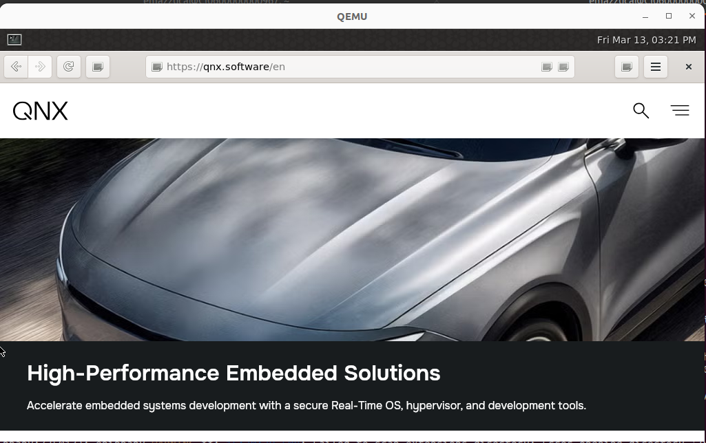

One of the goals of the QNX porting team is to enable rich browser-based UI experiences on QNX targets without requiring the full QNX Developer Desktop. This codelab walks through running Epiphany (GNOME Web) — a WebKit2GTK-based browser — on a minimal QNX 8.0 image with no XFCE desktop stack.
The target use case is embedded platforms like the Ezurio i.MX8, where a customer may want a working browser without shipping a full desktop environment. This codelab proves the concept on QEMU x86_64 first.
What you will learn:
qapkimgendesktop-shellPrerequisites:
Before diving into steps, it helps to understand what we're building and why each piece exists.
A standard QNX Developer Desktop image includes a full init system, XFCE desktop, and pre-configured graphics stack. On a minimal image, none of that exists — you get a kernel, a shell, and not much else. We need to build up the stack ourselves.
The layers, from bottom to top:
Layer | Component | What it does |
Hardware input |
| Captures mouse and keyboard from QEMU's emulated PS/2 devices |
Display driver |
| Drives the virtio GPU exposed by QEMU |
Display server | QNX Screen | Low-level window/surface manager. Everything graphical goes through Screen |
Compositor | Weston | Wayland compositor. Manages windows, provides the desktop environment |
Browser | Epiphany + WebKit2GTK | The browser itself. WebKit splits into multiple processes that communicate over dbus |
The key insight is order matters. Mouse input must be initialized before Screen starts, Screen must be running before Weston starts, and Weston and Epiphany must share a single dbus session for WebKit's inter-process communication to work.
We create all configuration files on the host machine before touching the QNX image. This is a hard rule: the minimal image has no /tmp or pipes at first boot, making it impossible to create multi-line files directly on the target.
Create a working directory:
mkdir -p ~/qnx-browser-setup
/bin/init — the boot scriptOn the minimal image there is no init system yet (OpenRC is planned but not ready). The IFS bootloader checks for /bin/init on the real filesystem and runs it if found. This script is our hand-rolled replacement — it brings up every service the system needs before handing off to a login prompt.
It does three broad things:
/tmp. These are things Linux provides automatically; on QNX they are separate servers that must be started explicitly. Without them, sudo fails, dbus fails, and nothing works./bin/init on the desktop image.cat > ~/qnx-browser-setup/bin-init << 'EOF'
#!/usr/bin/bash
echo "FSEVMGR INIT"
on -p 98 /usr/bin/fsevmgr
echo "PIPE INIT"
on -p 98 /usr/bin/pipe
/ifs/usr/bin/waitfor /dev/pipe
echo "MQUEUE INIT"
on -p 98 /usr/bin/mqueue
/ifs/usr/bin/waitfor /dev/mqueue
echo "TMPFS INIT"
tmem=$(($(cat /proc/vm/stats | grep page_count | cut -d'=' -f2 | cut -d' ' -f1)))
tmpfs_size=$((tmem / 20 * 4096))
devb-ram ram capacity=1 blk ramdisk="$tmpfs_size"
/ifs/usr/bin/waitfor /dev/ram0
mkqnx6fs -q /dev/ram0
mount /dev/ram0 /tmp
chmod 1777 /tmp
echo "RANDOM INIT"
on -p 98 sh -c 'random -l devr-virtio.so'
/ifs/usr/bin/waitfor /dev/random
echo "SOCKET INIT"
on -p 98 sh -c 'io-sock -m phy -m pci -d vtnet_pci'
/ifs/usr/bin/waitfor /dev/socket
echo "DHCPCD INIT"
on -p 20 dhcpcd -bq
echo "SSHD INIT"
if ! [[ -f /etc/ssh/ssh_host_rsa_key ]]; then
ssh-keygen -A
fi
on -p 20 /usr/bin/sshd
echo "IO-HID INIT"
io-hid -dps2ser-vm kbd:kbddev:vmware:mousedev
/ifs/usr/bin/waitfor /dev/io-hid/io-hid
echo "DRM INIT"
drm-virtio -u qnx &
sleep 2
echo "SCREEN INIT"
screen -c /usr/share/screen/graphics-virtio-virgl.conf -u qnx
/ifs/usr/bin/waitfor /dev/screen/command
echo "drop_privileges" > /dev/screen/command
mkdir -p /var/run/1000
chown 1000:1000 /var/run/1000
chmod 700 /var/run/1000
echo "LOGIN"
on -d -t /dev/ser1 sh -c '/ifs/usr/bin/reopen /dev/ser1 && while true; do login; sleep 1; done'
EOF
start-browser.sh — the launch scriptThis is the single command you run after logging in. It starts Weston and Epiphany inside one shared dbus session. They must share a session because WebKit splits into multiple processes (UI, web, network) and uses dbus to coordinate between them — separate sessions causes the browser to open with a blank white screen and no error.
cat > ~/qnx-browser-setup/start-browser.sh << 'EOF'
#!/usr/bin/bash
dbus-run-session bash -c "
export XDG_RUNTIME_DIR=/var/run/1000
export XKB_CONFIG_ROOT=/usr/share/X11/xkb
export XDG_DATA_DIRS=/usr/share
export XDG_CACHE_HOME=/var/home/qnx/.cache
export XDG_DATA_HOME=/var/home/qnx/.local/share
export XDG_CONFIG_HOME=/var/home/qnx/.config
export XDG_STATE_HOME=/var/home/qnx/.local/state
export __GL_SHADER_CACHE=1
export WAYLAND_DISPLAY=wayland-1
weston --backend=qnx-screen-backend.so -c ~/.config/weston.ini &
sleep 3
epiphany https://example.com
"
EOF
graphics-virtio-virgl.conf — the Screen configTells QNX Screen how to initialize the virtio GPU and what resolution to use. The QNX virtio WFD driver caps at 1024x600 regardless of what you request — so we set video-mode to match that reality. This must always match the xres/yres value in the QEMU launch command; if they differ, the SDL window is larger than QNX's output and you get black borders.
cat > ~/qnx-browser-setup/graphics-virtio-virgl.conf << 'EOF'
begin khronos
begin egl display 1
egl-dlls = virtio_dri.so EGL-mesa.so
glesv2-dlls = virtio_dri.so GLESv2-mesa.so
gpu-dlls = virtio_dri.so gpu_virtio.so
vk-icds = virtio_icd.json
end egl display
explicit-screen-buffer-coherency=true
begin wfd device 1
wfd-dlls = libwfdcfg-virtio.so libWFDvirtio.so
end wfd device
end khronos
begin winmgr
begin globals
blit-config = gles2blt
alloc-config = alloc-virtio-virgl
end globals
begin display 1
video-mode = 1024 x 600 @ 60
defer-framebuffer-creation = false
force-composition = true
allow-bypass = false
end display
begin class framebuffer-1
display = 1
format = rgbx8888
usage = gles2blt
buffer-count = 4
end class
end winmgr
EOF
weston.ini — the Weston configSelects desktop-shell.so as the Weston shell plugin, which gives Epiphany a normal windowed environment with its toolbar and address bar visible. The alternative kiosk-shell.so forces fullscreen and hides the entire browser UI — useful for locked-down customer delivery, but not for general use.
cat > ~/qnx-browser-setup/weston.ini << 'EOF'
[core]
shell=desktop-shell.so
EOF
Create ~/qapkimgen/run_browser.sh:
cat > ~/qapkimgen/run_browser.sh << 'EOF'
qemu-system-x86_64 \
-smp $(nproc) \
--enable-kvm \
--cpu host,host-phys-bits-limit=39 \
-machine pc \
-m 16G \
-drive if=pflash,format=raw,readonly=on,file=/usr/share/OVMF/OVMF_CODE.fd \
-drive if=pflash,format=raw,file=./OVMF_VARS.fd \
-drive file=./out/x86_64-qemu-uefi-<date>.img,if=virtio,id=drv0,driver=raw \
-netdev user,id=net0,hostfwd=tcp::2222-:22 \
-device virtio-net-pci,netdev=net0 \
-object rng-random,filename=/dev/urandom,id=rng0 -device virtio-rng-pci,rng=rng0 \
-serial mon:stdio \
-vga none \
-device virtio-vga-gl,xres=1024,yres=600 \
-display sdl,gl=on
EOF
chmod +x ~/qapkimgen/run_browser.sh
A few important notes about this command:
xres=1024,yres=600 must match video-mode in the screen config. Both must always be changed together.-device virtio-mouse-pci or -device virtio-keyboard-pci — the mouse driver uses QEMU's implicit PS/2 emulation from -machine pc. Adding virtio input devices on top breaks mouse input.OVMF_CODE.fd read-only + separate OVMF_VARS.fd) prevents QEMU from corrupting the EFI NVRAM when the launch command changes. If you ever see a PXE boot loop, reset with: cp /usr/share/OVMF/OVMF_VARS.fd ./OVMF_VARS.fdcd ~/qapkimgen
source ~/qnx800/qnxsdp-env.sh
export LD_LIBRARY_PATH=$HOME/.local/lib/x86_64-linux-gnu:$LD_LIBRARY_PATH
./qapkimgen ./presets/x86_64-qemu-uefi.preset
Once built, set up OVMF and launch:
cp /usr/share/OVMF/OVMF_VARS.fd ./OVMF_VARS.fd
./run_browser.sh
Update the image filename in run_browser.sh to match the output file from qapkimgen.
Log in on the serial console with username qnx.
The minimal image has no certificate trust store, so APK cannot verify HTTPS connections to the package repositories. We fix this using a utility bundled in the image build artifacts — no manual certificate copying required.
On the host:
scp -P 2222 ~/qapkimgen/tmp/x86_64-qemu-uefi/apkroot/usr/bin/update-ca-trust qnx@localhost:/tmp
On the target:
sudo cp /tmp/update-ca-trust /usr/bin/
sudo /usr/bin/update-ca-trust extract --init
sudo apk update
sudo apk add \
lz4-libs \
epiphany \
font-dejavu \
weston \
weston-backend-qnx-screen \
weston-shell-desktop \
qnx-screen-virtio \
qnx-hid \
qnx-devh \
qnx-devh-vmmouse \
dbus
Two packages are easy to miss and cause confusing silent failures:
font-dejavu — Without fonts installed, WebKit renders a completely blank white page with no error message. It looks identical to a crash.weston-shell-desktop — A separate package from Weston itself. Without it, the only available shell is kiosk-shell, which hides Epiphany's entire toolbar and UI.Transfer all config files in one scp command:
scp -P 2222 \
~/qnx-browser-setup/bin-init \
~/qnx-browser-setup/start-browser.sh \
~/qnx-browser-setup/graphics-virtio-virgl.conf \
~/qnx-browser-setup/weston.ini \
qnx@localhost:/var/home/qnx/
Then install them on the target:
sudo cp /var/home/qnx/bin-init /bin/init
sudo chmod +x /bin/init
sudo cp /var/home/qnx/start-browser.sh /usr/bin/start-browser.sh
sudo chmod +x /usr/bin/start-browser.sh
sudo mkdir -p /usr/share/screen
sudo cp /var/home/qnx/graphics-virtio-virgl.conf /usr/share/screen/graphics-virtio-virgl.conf
mkdir -p ~/.config
cp /var/home/qnx/weston.ini ~/.config/weston.ini
Reboot the image:
sudo shutdown
Watch the serial console during boot. You should see each INIT step print in sequence:
FSEVMGR INIT
PIPE INIT
MQUEUE INIT
TMPFS INIT
RANDOM INIT
SOCKET INIT
DHCPCD INIT
SSHD INIT
IO-HID INIT
DRM INIT
SCREEN INIT
LOGIN
Once you see the login prompt, log in and run:
start-browser.sh
Epiphany will launch with a full browser UI — address bar, navigation buttons, and working mouse input.
Symptom | Cause | Fix |
|
| Check serial console for last INIT line printed |
| QNX Screen not running | Run |
|
| Check serial console |
Black borders around desktop |
| Both must be |
Browser toolbar missing | Wrong Weston shell, or Epiphany saved fullscreen state | Verify |
Mouse not working | Virtio mouse device in QEMU, or io-hid not started before Screen | Remove |
|
| Cannot fix on target without SSH; mount image on host to repair |
You have successfully deployed a standalone Epiphany browser on a minimal QNX 8.0 image. The key takeaways from this work: